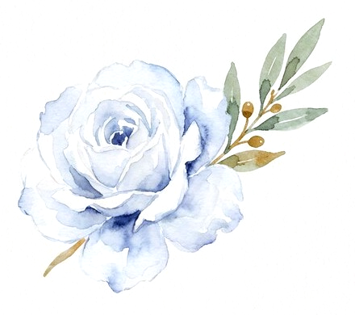

Propuesta A

Psicalma el alma
Cristina Rosa Gil · Psicóloga
La rosa, más viva
Una evolución del logo actual: mantiene la rosa y la letra manuscrita, pero la rosa se pinta en acuarela azul con una ramita de olivo verde y ocre.
P
Versiones para el perfil de Instagram y el icono de la web